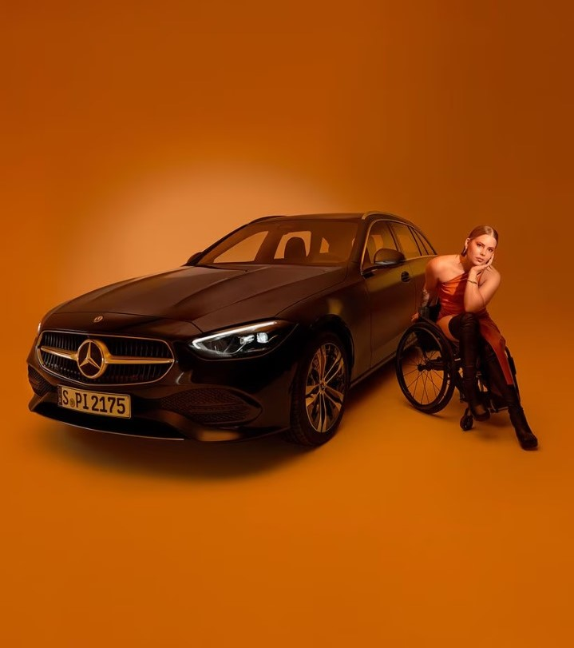

Responsibility
Inclusion is unstopable
Mercedes-Benz
Mercedes-Benz, commonly referred to as Mercedes and sometimes as Benz, is a German luxury and commercial vehicle automotive brand established in 1926. Mercedes-Benz AG is headquartered in Stuttgart, Baden-Württemberg, Germany. Mercedes-Benz, commonly referred to as Mercedes and sometimes as Benz, is a German luxury and commercial vehicle automotive brand established in 1926. Mercedes-Benz AG is headquartered in Stuttgart, Baden-Württemberg, Germany.referred to as Mercedes and sometimes as Benz, is a German luxury and commercial vehicle automotive brand established in 1926. Mercedes-Benz AG is headquartered in rman luxury and commercial vehicle automotive brand established in 1926. Mercedes-Benz AG is headquartered in Stuttgart, Baden-Württemberg, Germany.
Future Mobility
Neon Dreams.

Exclusive
Mercedes-Benz' new
Sustainbility Prize.

Milestones
Defining Class Since 1886.